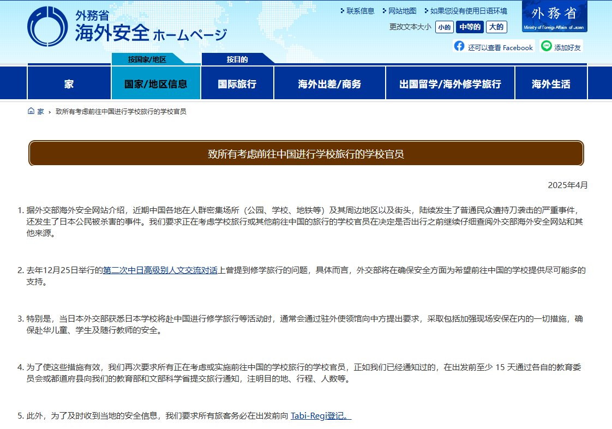
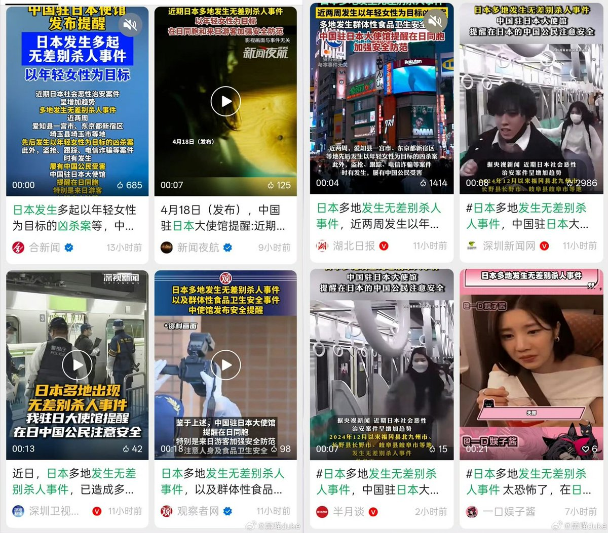

遷鵺_SenNue
@qianye_zhenyu
@whyyoutouzhele 暴力事件哪个国家都有，但是看到中日双方开始靠这玩意扯皮，我就只觉得精彩（


李老师不是你老师
@whyyoutouzhele
日前，日本外务省在官网发布安全提醒：近期中国各地人群密集场所及街头，陆续发生了普通民众遭持刀袭击的严重事件，还发生了日本公民被杀害的事件。要求日本学校充分确认安全信息后在决定是否组织赴华修学旅行。 https://t.co/UU2tSsX4pn